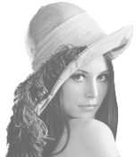
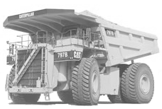

|  |
El trabajo realizado dentro de este área ha estado principalmente orientado a los sistemas de visualización remota de imágenes JPEG2000: se ha estudiado en profundidad el estándar JPEG2000, se han analizado y evaluado las tecnologías y métodos existentes, tanto dentro como fuera del estándar, para el desarrollo de este tipo de sistemas y se ha trabajado activamente con el protocolo JPIP (participación en el Google Summer of Code 2006 implementando una solución cliente/servidor Java para JPIP y colaboración en la implementación de este protocolo para la API Java Advanced Imaging). Actualmente se investigan y desarrollan nuevos métodos (prefetching, transcoding, etc.) y protocolos (JPIP-W, peer-to-peer, etc.) para intentar conseguir el estado de arte en este tipo de sistemas. Se han realizado otros trabajos dentro de este área como la colaboración en el diseño del codec de vídeo FSVC (Fully Scalable Video Codec) basado en JPEG2000 y el desarrollo de sistemas eficientes de telepatología basados en virtual slides con JPEG2000 (métodos de stitching y transmisión de imágenes médicas). |
|  |
El trabajo que se realiza dentro de este área está orientado principalmente a los vehículos de ensayos y medida del Centro de Experiencias de Michelin en Almería: diseño de vehículos autoguiados, control de flotas por GPS, sistemas de control y medida basados en CAN, etc. Dicho trabajo, por motivos de confidencialidad, no puede ser publicado. Se aborda también el campo del procesamiento de imágenes, habiendo desarrollado varias soluciones para el Centro de Experiencia de Michelin en Almería. Estas aplicaciones se emplean para la obtención de medidas e información de neumáticos a partir de imágenes digitales. Paralelamente, dentro del programa de doctorado "Ingeniería de Sistemas y Automática" de la UNED, se investiga en la aplicación de la teoría de sistemas híbridos para el diseño de vehículos inteligentes y soluciones de control de tráfico multiagente. |